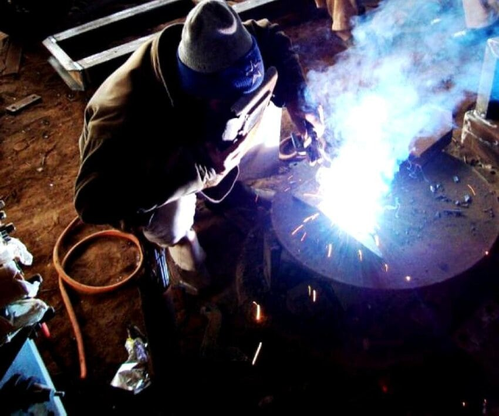

Founded in Wichita, Kansas in 1959, Emmerich Tool Supplies has grown from its humble origins as a family blacksmith into an engineering hub for the midwest, bringing together craftsmen, scientists and salesmen to deliver quality, wherever it's needed.

Passion and precision
The wide variety of tools required for engineering necessitates a combination of old and new techniques for the modern age. Emmerich Tools are manufactured using both artisanal crafting techniques and modern steel injection-molding to create industrial-quality hardware with a personal touch.
Manual tools
We offer a range of old-fashioned, reliable tools ready for any home improvement project.